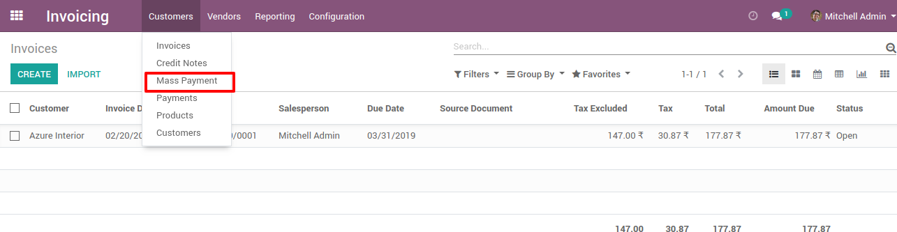

User can generate multiple payments for customer/vendor and can reconcile directly.
Note: This module is tested and working in Enterprise version. And we are supporting Ubuntu OS and not Windows OS.
Features
Generate Mass Payment for customer/vendor invoice.
Generate Mass Payment for selected customer/vendor invoice.
Manage the Journal Entry for mass payment.
Generate report for mass payment.
How to use
User need to fill appropriate fields and by click on "Create Payment" button. Draft payments will generate for all due payments. by click on "Confirm" button, all payments are posted,reconciled and journal entries will be created.
Menu for customer mass payment

User need to select following fields.
Company - For which mass payment need to create.
Partner(optional) - For which partner(s) mass payment need to create.
Journal - Which journal is used in all payments.
Number of days old(optional) - field take integer. used for how many old days invoice/bill fetched for payments.
By clicking on "Create Payment" button. its will create draft payments for all due payments of customers whose invoices are in "Open" state.
By Clicking on "Confirm" button. all customer payments entries will be posted, and journal entries will be created for each. on click "Journal Entries" button user can see all journal entries.
Here, We can see impact of customer mass payment on customer invoice.
User can print report regarding mass payment.
Menu for vendors mass payment
Same thing to do for vendor mass payments. Here all due vendor payment will be fetch.
By Clicking on "Confirm" button. all vendor payments entries will be posted and journal entries will be created for each. on click "Journal Entries" button user can see all journal entries.
Here, We can see impact of vendor mass payment on vendor bills.
User can print report regarding mass payment.
Select and filter invoices based on selected customer.
NOTE: We give 60 days support for our customers. Before trying in your live db, please ask us to provide you for test link. If any other custom modules are installed and because of that some errors occurs then we charge extra.